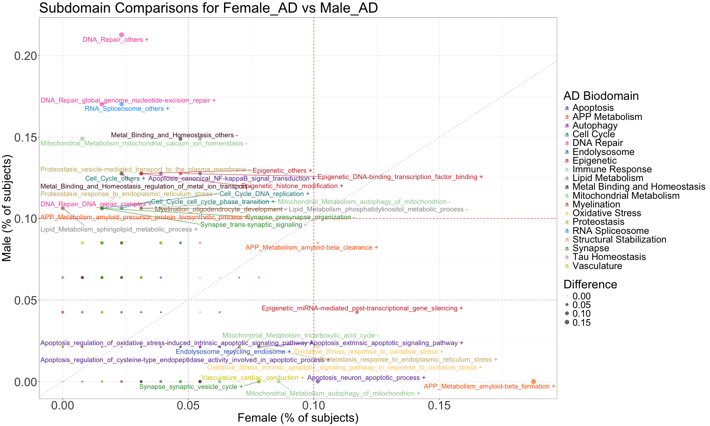
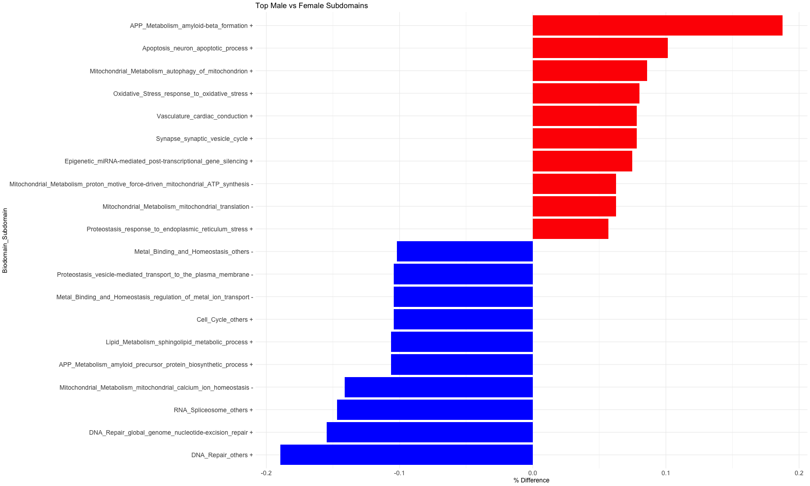
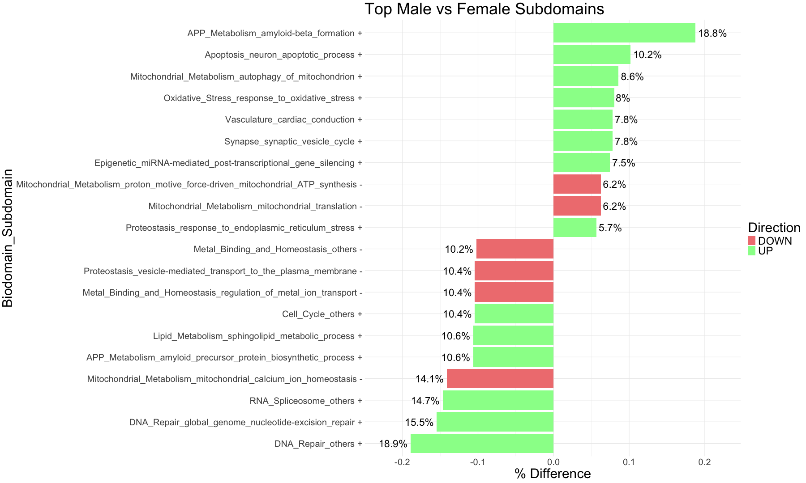
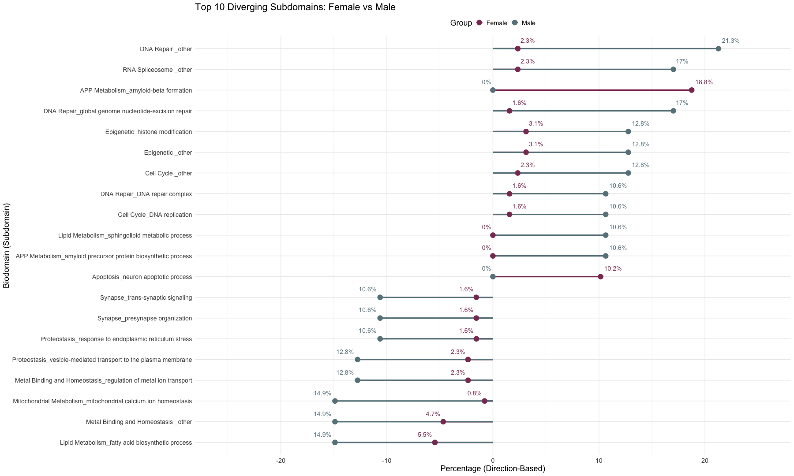
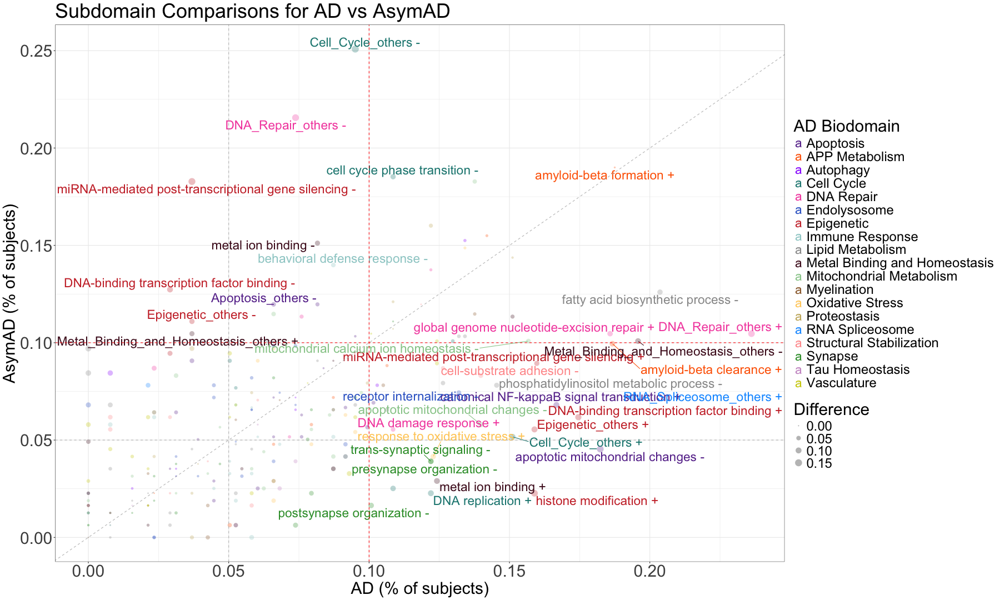
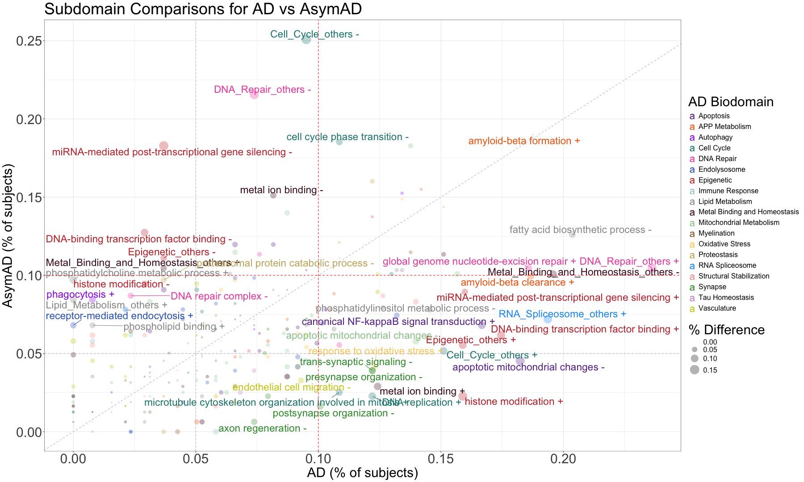
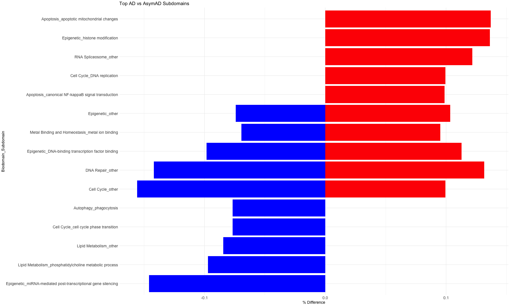
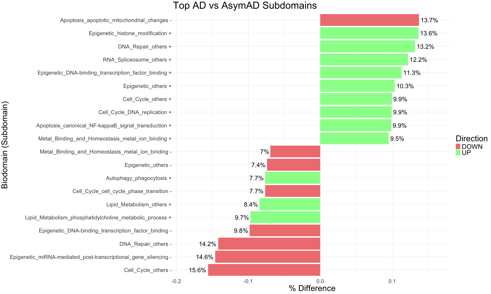
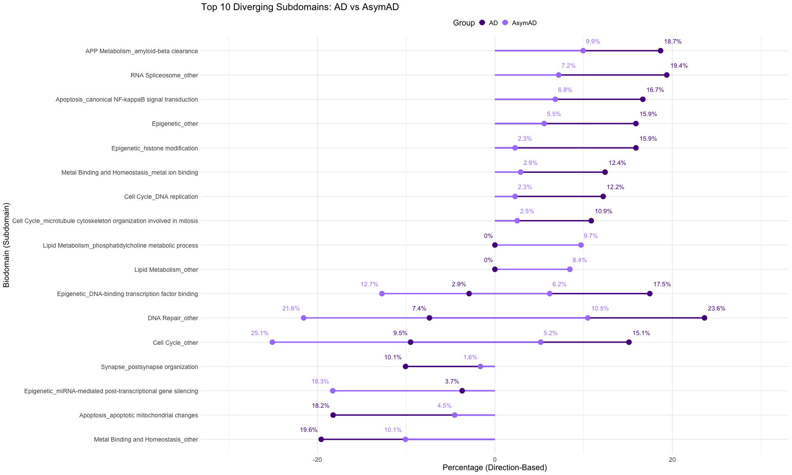

######################################################################################################################################################################################################## # Male vs Female # Define a custom color palette with distinct colors for each biodomain (different type of Biodomain - color define by Greg Carry) custom_colors <- c("Apoptosis" = "#673399", "APP Metabolism" = "#fe6500", "Autophagy" = "#9931fd", "Cell Cycle" = "#18857f", "DNA Repair" = "#f451ad", "Endolysosome" = "#3466cc", "Epigenetic" = "#cb3233", "Immune Response" = "#9ccdcc", "Lipid Metabolism" = "#989898", "Metal Binding and Homeostasis" = "#4b0d20", "Mitochondrial Metabolism" = "#97cb98", "Myelination" = "#996735", "Oxidative Stress" = "#ffcd66", "Proteostasis" = "#c8b269", "RNA Spliceosome" = "#0c9aff", "Structural Stabilization" = "#ff9a9a", "Synapse" = "#329a33", "Tau Homeostasis" = "#cb97cb", "Vasculature" = "#cecd02", "none" = "#7f7f7f") # Male vs Female AD # Open the subdomain file where UP (+) and DOWN (-) subdomains are merged together in a single column and the data is separated as a comparison for Male vs Female subdomains #data_subdomain_MvF_AD <- read.csv("Male_Female_comarative_subdomain_results.csv", sep =",", header = TRUE, stringsAsFactors = FALSE) data_subdomain_MvF_AD <- read.csv("Male_Female_comarative_subdomain_results_050525.csv", sep =",", header = TRUE, stringsAsFactors = FALSE) head(data_subdomain_MvF_AD, 5)
## Sno unique_id Biodomain Subdomain_initial ## 1 1 AM_ac_4 APP Metabolism amyloid-beta clearance ## 2 2 AM_af_5 APP Metabolism amyloid-beta formation ## 3 3 AM_appbp_2 APP Metabolism amyloid precursor protein biosynthetic process ## 4 4 AM_appmp_3 APP Metabolism amyloid precursor protein metabolic process ## 5 5 AM_others_1 APP Metabolism other ## Subdomain ## 1 amyloid-beta clearance + ## 2 amyloid-beta formation + ## 3 amyloid precursor protein biosynthetic process + ## 4 amyloid precursor protein metabolic process + ## 5 APP_Metabolism_others + ## Biodomain_Subdomain_initial ## 1 APP Metabolism_amyloid-beta clearance ## 2 APP Metabolism_amyloid-beta formation ## 3 APP Metabolism_amyloid precursor protein biosynthetic process ## 4 APP Metabolism_amyloid precursor protein metabolic process ## 5 APP Metabolism _other ## Biodomain_Subdomain Direction ## 1 APP_Metabolism_amyloid-beta_clearance + UP ## 2 APP_Metabolism_amyloid-beta_formation + UP ## 3 APP_Metabolism_amyloid_precursor_protein_biosynthetic_process + UP ## 4 APP_Metabolism_amyloid_precursor_protein_metabolic_process + UP ## 5 APP_Metabolism_others + UP ## Female Male Difference ## 1 0.1015625 0.08510638 0.01645612 ## 2 0.1875000 0.00000000 0.18750000 ## 3 0.0000000 0.10638298 0.10638298 ## 4 0.0234375 0.04255319 0.01911569 ## 5 0.0234375 0.04255319 0.01911569
# Plot the data as a comparison for Male vs Female subdomains ggplot(data_subdomain_MvF_AD, aes(x = Female, y = Male, color = Biodomain, size = Difference)) + geom_point(aes(color=Biodomain, size = Difference), alpha=0.6, stroke = 0) + theme_bw() + # Conditionally label points where AD or AsymAD values are greater than 0.05 geom_text_repel( aes(label = ifelse((Male > 0.10 & Female < 0.05) | (Female > 0.07 & Male < 0.05) | (Female > 0.07 & Male > 0.07), Biodomain_Subdomain, "")), size = 6, max.overlaps = Inf ) + scale_color_manual(values = custom_colors) + labs(color = "AD Biodomain") + # Add x = y line geom_abline(slope = 1, intercept = 0, linetype = "dashed", color = "gray", size = 0.5) + # Add horizontal and vertical dashed lines geom_hline(yintercept = 0.05, linetype = "dashed", color = "gray") + geom_hline(yintercept = 0.10, linetype = "dashed", color = "red") + geom_vline(xintercept = 0.05, linetype = "dashed", color = "gray") + geom_vline(xintercept = 0.10, linetype = "dashed", color = "red") + labs(title = "Subdomain Comparisons for Female_AD vs Male_AD", x = "Female (% of subjects)", y = "Male (% of subjects)") + theme( text = element_text(size = 30), legend.position = "right", axis.text = element_text(size = 30), axis.title = element_text(size = 30) )
## Warning: Using `size` aesthetic for lines was deprecated in ggplot2 3.4.0. ## ℹ Please use `linewidth` instead. ## This warning is displayed once every 8 hours. ## Call `lifecycle::last_lifecycle_warnings()` to see where this warning was ## generated.

######################################################################################################################################################################################################## # Wrap long Subdomain names #data_subdomain_MvF_AD <- data_subdomain_MvF_AD %>% #mutate(Subdomain_wrapped = str_wrap(Subdomain, width = 25)) ggplot(data_subdomain_MvF_AD, aes(x = Male, y = Female, color = Biodomain, size = Difference)) + geom_point(alpha = 0.6, stroke = 0) + # Increased alpha for better visibility theme_bw() + # Conditionally label points where |Male - Female| >= 0.05 geom_text_repel( aes(label = ifelse((abs(Female - Male) >= 0.07) | (Female > 0.07 & Male > 0.07), Subdomain, "")), size = 8, max.overlaps = Inf # Ensure all significant labels are shown ) + scale_size(range = c(.1, 10), name="% Difference") + scale_color_manual(values = custom_colors) + labs(color = "AD Biodomain") + # Add x = y reference line geom_abline(slope = 1, intercept = 0, linetype = "dashed", color = "gray", linewidth = 0.5) + # Add horizontal and vertical threshold lines geom_hline(yintercept = 0.05, linetype = "dashed", color = "gray") + geom_hline(yintercept = 0.10, linetype = "dashed", color = "red") + geom_vline(xintercept = 0.05, linetype = "dashed", color = "gray") + geom_vline(xintercept = 0.10, linetype = "dashed", color = "red") + labs(title = "Subdomain Comparisons for Female_AD vs Male_AD", x = "Male (% of subjects)", y = "Female (% of subjects)") + theme( text = element_text(size = 30), legend.position = "right", axis.text = element_text(size = 30), axis.title = element_text(size = 30) ) + theme(legend.text=element_text(size=16))

######################################################################################################################################################################################################## # Calculate difference dynamically (Female - Male) data_subdomain_MvF_AD <- data_subdomain_MvF_AD %>% mutate(Difference = Female - Male) %>% # Compute difference arrange(Difference) # Sort data: Male-dominant (negative) first, Female-dominant (positive) last # Select top pathways for better visualization top_n <- 20 # Adjust this number as needed data_top <- data_subdomain_MvF_AD[c(1:(top_n/2), (nrow(data_subdomain_MvF_AD) - (top_n/2) + 1):nrow(data_subdomain_MvF_AD)), ] # Create a diverging bar plot with value labels ggplot(data_top, aes(x = reorder(Biodomain_Subdomain, Difference), y = Difference, fill = Difference > 0)) + geom_bar(stat = "identity", show.legend = FALSE) + coord_flip() + # Flip for horizontal bars scale_fill_manual(values = c("blue", "red")) + # Blue = Male-dominant, Red = Female-dominant theme_minimal() + labs(title = "Top Male vs Female Subdomains", #subtitle = "Red = More Female-Dominant | Blue = More Male-Dominant", x = "Biodomain_Subdomain", y = "% Difference") + theme(text = element_text(size = 14), axis.text = element_text(size = 14))

ggplot(data_top, aes(x = reorder(Biodomain_Subdomain, Difference), y = Difference, fill = Direction)) + geom_bar(stat = "identity", show.legend = TRUE) + geom_text(aes(label = paste0(round(abs(Difference) * 100, 1), "%")), # absolute value ×100 + % sign hjust = ifelse(data_top$Difference >= 0, -0.1, 1.1), # position text left or right size = 8) + coord_flip() + # horizontal bars scale_fill_manual(values = c("DOWN" = "lightcoral", "UP" = "palegreen")) + theme_minimal() + labs(title = "Top Male vs Female Subdomains", x = "Biodomain_Subdomain", y = "% Difference", fill = "Direction") + theme(text = element_text(size = 30), axis.text = element_text(size = 20)) + expand_limits(y = c(min(data_top$Difference) * 1.2, max(data_top$Difference) * 1.2))

####################################################################################################################################################################################################### library(ggplot2) library(dplyr) library(tidyr)
# Select top N subdomains by absolute difference top_n <- 20 data_top <- data_subdomain_MvF_AD %>% mutate(Difference = Female - Male, AbsDifference = abs(Difference)) %>% arrange(desc(AbsDifference)) %>% slice(1:top_n) # Reshape to long format (Female and Male side-by-side) data_long <- data_top %>% select(Biodomain_Subdomain_initial, Direction, Female, Male) %>% pivot_longer(cols = c(Female, Male), names_to = "Group", values_to = "Value") %>% mutate( Percent = Value * 100, # Invert values for DOWN direction to go on the left PlotValue = ifelse(Direction == "DOWN", -Percent, Percent), Group = factor(Group, levels = c("Female", "Male")) ) # Plot ggplot(data_long, aes(x = reorder(Biodomain_Subdomain_initial, PlotValue), y = PlotValue)) + geom_segment(aes(xend = Biodomain_Subdomain_initial, y = 0, yend = PlotValue, color = Group), size = 1.5) + geom_point(aes(color = Group), size = 5) + geom_text(aes(label = paste0(round(abs(PlotValue), 1), "%"), color = Group), hjust = ifelse(data_long$PlotValue > 0, -0.2, 1.2), nudge_x = 0.4, size = 5) + coord_flip() + scale_color_manual(values = c("Female" = "hotpink4", "Male" = "lightblue4")) + labs( title = "Top 10 Diverging Subdomains: Female vs Male", x = "Biodomain (Subdomain)", y = "Percentage (Direction-Based)", color = "Group" ) + theme_minimal(base_size = 15) + theme( text = element_text(size = 18), axis.text.y = element_text(size = 14), legend.position = "top" ) + expand_limits(y = c(-max(data_long$Percent) * 1.2, max(data_long$Percent) * 1.2))

######################################################################################################################################################################################################## ######################################################################################################################################################################################################## # AD vs AsymAD # Open the subdomains where the Male and Female percentages are combined together to get AD and AsymAD specific subdomains # Further, UP (+) and DOWN (-) subdomains are merged together in a single column and the data is separated as a comparison for AD vs AsymAD subdomains #data_subdomain_ADvAsymAD <- read.csv("AD_AsymAD_comarative_subdomain_results.csv", sep =",", header = TRUE, stringsAsFactors = FALSE) data_subdomain_ADvAsymAD <- read.csv("AD_AsymAD_comarative_subdomain_results_050525.csv", sep =",", header = TRUE, stringsAsFactors = FALSE) head(data_subdomain_ADvAsymAD, 5)
## Sno unique_id Biodomain Subdomain_initial ## 1 1 AM_ac_4 APP Metabolism amyloid-beta clearance ## 2 2 AM_af_5 APP Metabolism amyloid-beta formation ## 3 3 AM_appbp_2 APP Metabolism amyloid precursor protein biosynthetic process ## 4 4 AM_appmp_3 APP Metabolism amyloid precursor protein metabolic process ## 5 5 AM_others_1 APP Metabolism other ## Subdomain ## 1 amyloid-beta clearance + ## 2 amyloid-beta formation + ## 3 amyloid precursor protein biosynthetic process + ## 4 amyloid precursor protein metabolic process + ## 5 APP_Metabolism_others + ## Biodomain_Subdomain_initial ## 1 APP Metabolism_amyloid-beta clearance ## 2 APP Metabolism_amyloid-beta formation ## 3 APP Metabolism_amyloid precursor protein biosynthetic process ## 4 APP Metabolism_amyloid precursor protein metabolic process ## 5 APP Metabolism_other ## Biodomain_Subdomain Direction ## 1 APP_Metabolism_amyloid-beta_clearance + UP ## 2 APP_Metabolism_amyloid-beta_formation + UP ## 3 APP_Metabolism_amyloid_precursor_protein_biosynthetic_process + UP ## 4 APP_Metabolism_amyloid_precursor_protein_metabolic_process + UP ## 5 APP_Metabolism_others + UP ## AD AsymAD Difference ## 1 0.18666888 0.09949479 0.08717409 ## 2 0.18750000 0.19001959 0.00251959 ## 3 0.10638298 0.08825652 0.01812646 ## 4 0.06599069 0.02897206 0.03701863 ## 5 0.06599069 0.04783998 0.01815071
# Plot the data as a comparison for AD vs AsymAD pathways ggplot(data_subdomain_ADvAsymAD, aes(x = AD, y = AsymAD, color = Biodomain, size = Difference)) + geom_point(aes(color = Biodomain, size = Difference), alpha = 0.3, stroke = 0) + theme_bw() + # Conditionally label points based on the specified conditions geom_text_repel( aes(label = ifelse((AD > 0.10 & Difference > 0.05) | (AsymAD > 0.10 & Difference > 0.05) | (AD > 0.15 & AsymAD > 0.15), Subdomain, "")), size = 8 ) + scale_color_manual(values = custom_colors) + labs(color = "AD Biodomain") + # Add x = y line geom_abline(slope = 1, intercept = 0, linetype = "dashed", color = "gray", size = 0.5) + # Add horizontal and vertical dashed lines geom_hline(yintercept = 0.05, linetype = "dashed", color = "gray") + geom_hline(yintercept = 0.10, linetype = "dashed", color = "red") + geom_vline(xintercept = 0.05, linetype = "dashed", color = "gray") + geom_vline(xintercept = 0.10, linetype = "dashed", color = "red") + labs(title = "Subdomain Comparisons for AD vs AsymAD", x = "AD (% of subjects)", y = "AsymAD (% of subjects)") + theme( text = element_text(size = 30), legend.position = "right", axis.text = element_text(size = 30), axis.title = element_text(size = 30) )
## Warning: ggrepel: 1 unlabeled data points (too many overlaps). Consider ## increasing max.overlaps

######################################################################################################################################################################################################## # Wrap long Subdomain names #data_subdomain_ADvAsymAD <- data_subdomain_ADvAsymAD %>% #mutate(Subdomain_wrapped = str_wrap(Subdomain, width = 25)) ggplot(data_subdomain_ADvAsymAD, aes(x = AD, y = AsymAD, color = Biodomain, size = Difference)) + geom_point(alpha = 0.3, stroke = 0) + # Points with transparency theme_bw() + # Conditionally label points where |AD - AsymAD| >= 0.05 geom_text_repel( aes(label = ifelse((abs(AD - AsymAD) >= 0.06) | (AD > 0.15 & AsymAD > 0.15), Subdomain, "")), size = 8, max.overlaps = Inf ) + scale_size(range = c(.1, 10), name="% Difference") + scale_color_manual(values = custom_colors) + labs(color = "AD Biodomain") + # Add x = y reference line geom_abline(slope = 1, intercept = 0, linetype = "dashed", color = "gray", size = 0.5) + # Add horizontal and vertical threshold lines geom_hline(yintercept = 0.05, linetype = "dashed", color = "gray") + geom_hline(yintercept = 0.10, linetype = "dashed", color = "red") + geom_vline(xintercept = 0.05, linetype = "dashed", color = "gray") + geom_vline(xintercept = 0.10, linetype = "dashed", color = "red") + # Title and axis labels labs(title = "Subdomain Comparisons for AD vs AsymAD", x = "AD (% of subjects)", y = "AsymAD (% of subjects)") + # Theme customization theme( text = element_text(size = 30), legend.position = "right", axis.text = element_text(size = 30), axis.title = element_text(size = 30) ) + theme(legend.text=element_text(size=16))

####################################################################################################################################################################################################### # Calculate difference dynamically (AD - AsuymAD) data_subdomain_ADvAsymAD <- data_subdomain_ADvAsymAD %>% mutate(Difference = AD - AsymAD) %>% # Compute difference arrange(Difference) # Sort data: AD-dominant (negative) first, AsymAD-dominant (positive) last # Select top pathways for better visualization top_n <- 20 # Adjust this number as needed data_top <- data_subdomain_ADvAsymAD[c(1:(top_n/2), (nrow(data_subdomain_ADvAsymAD) - (top_n/2) + 1):nrow(data_subdomain_ADvAsymAD)), ] # Create a diverging bar plot with value labels ggplot(data_top, aes(x = reorder(Biodomain_Subdomain_initial, Difference), y = Difference, fill = Difference > 0)) + geom_bar(stat = "identity", show.legend = FALSE) + coord_flip() + # Flip for horizontal bars scale_fill_manual(values = c("blue", "red")) + # Blue = Male-dominant, Red = Female-dominant theme_minimal() + labs(title = "Top AD vs AsymAD Subdomains", x = "Biodomain_Subdomain", y = "% Difference") + theme(text = element_text(size = 14), axis.text = element_text(size = 14))

ggplot(data_top, aes(x = reorder(Biodomain_Subdomain, Difference), y = Difference, fill = Direction)) + geom_bar(stat = "identity", show.legend = TRUE) + geom_text(aes(label = paste0(round(abs(Difference) * 100, 1), "%")), # absolute value ×100 + % sign hjust = ifelse(data_top$Difference >= 0, -0.1, 1.1), # position text left or right size = 8) + coord_flip() + # horizontal bars scale_fill_manual(values = c("DOWN" = "lightcoral", "UP" = "palegreen")) + theme_minimal() + labs(title = "Top AD vs AsymAD Subdomains", x = "Biodomain (Subdomain)", y = "% Difference", fill = "Direction") + theme(text = element_text(size = 30), axis.text = element_text(size = 20)) + expand_limits(y = c(min(data_top$Difference) * 1.2, max(data_top$Difference) * 1.2))

####################################################################################################################################################################################################### library(ggplot2) library(dplyr) library(tidyr) # Select top N subdomains by absolute difference top_n <- 20 data_top <- data_subdomain_ADvAsymAD %>% mutate(Difference = AD - AsymAD, AbsDifference = abs(Difference)) %>% arrange(desc(AbsDifference)) %>% slice(1:top_n) # Reshape to long format (AD and AsymAD side-by-side) data_long <- data_top %>% select(Biodomain_Subdomain_initial, Direction, AD, AsymAD) %>% pivot_longer(cols = c(AD, AsymAD), names_to = "Group", values_to = "Value") %>% mutate( Percent = Value * 100, # Invert values for DOWN direction to go on the left PlotValue = ifelse(Direction == "DOWN", -Percent, Percent), Group = factor(Group, levels = c("AD", "AsymAD")) ) # Plot ggplot(data_long, aes(x = reorder(Biodomain_Subdomain_initial, PlotValue), y = PlotValue)) + geom_segment(aes(xend = Biodomain_Subdomain_initial, y = 0, yend = PlotValue, color = Group), size = 1.5) + geom_point(aes(color = Group), size = 5) + geom_text(aes(label = paste0(round(abs(PlotValue), 1), "%"), color = Group), hjust = ifelse(data_long$PlotValue > 0, -0.2, 1.2), nudge_x = 0.4, size = 5) + coord_flip() + scale_color_manual(values = c("AD" = "purple4", "AsymAD" = "mediumpurple1")) + labs( title = "Top 10 Diverging Subdomains: AD vs AsymAD", x = "Biodomain (Subdomain)", y = "Percentage (Direction-Based)", color = "Group" ) + theme_minimal(base_size = 15) + theme( text = element_text(size = 18), axis.text.y = element_text(size = 14), legend.position = "top" ) + expand_limits(y = c(-max(data_long$Percent) * 1.2, max(data_long$Percent) * 1.2))
